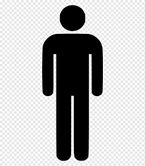
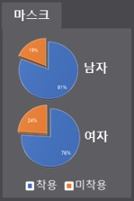

SPLine Chart
Line Chart
Line Chart (Circle Point)
PIE Chart ( Select function )
PIE Donut Chart

PIE Chart ( Not legend , ReSize )
PIE Piece Chart ( ====== Not Support ====== )

BAR Chart ( Normal )
BAR Chart ( Dual , Bar Color Change )
Bullet Chart
Chart ( ====== Not Support ====== )
 라인, 라인에리어, 막대그래프 혼용 불가
라인, 라인에리어, 막대그래프 혼용 불가
변경안 1 (라인, 막대 그래프)
변경안 2 (라인, 에리어 그래프)
 라인, 라인에리어, 막대그래프 혼용 불가 ( 차량번호 인식 유무에 따라 그래프 안쓰일 수 있음 )
라인, 라인에리어, 막대그래프 혼용 불가 ( 차량번호 인식 유무에 따라 그래프 안쓰일 수 있음 )

Heatmap Chart
( Spectrum Legend 를 이용한다고 Document에 있으나 사용방법이 없어 레전드 글자색상이 못바꿈. 레전드 없는 스펙트럼 그래프 가능)
Rader Chart
( 기존 XAxis/YAxis와 다른 circularAxis를 쓰는데 색상 변경이 안됨. 예제도 모두 흰색 바탕이라 참고 불가)
변경안 1 (라디얼 바 차트)
변경안 2 (라디얼 바 차트 : 데이터 라벨 추가/ 주변 라벨 제거)